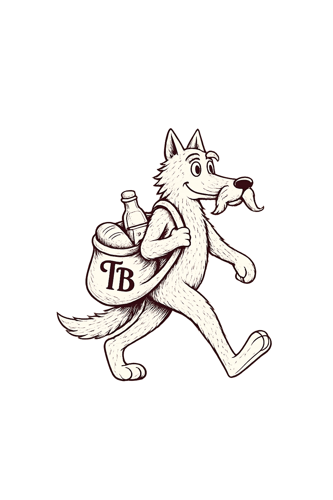

Микро-маркети са фарме и готова храна 24/7 за канцеларијске раднике
Идеја пројекта „Торба Вука” је једноставна: желимо да канцеларијски радници имају 24/7 приступ правој храни и одабраним производима малих пољопривредника из Србије.
Циљ је да запослени могу да једу нормалну, кувану храну по истој цени по којој су до сада куповали индустријске грицкалице. На овај начин запослени добијају здравију алтернативу, а локални произвођачи директну економску корист.
Како ради: Поставља се отворена расхладна витрина у зони за одмор.
Плаћање: Концепт поверења. Запослени сами узимају оброк и плаћају скенирањем QR кода или картицом на терминалу.
Примена: Погодно за компаније са затвореним канцеларијским просторима.
Како ради: Затворени систем са лифтом који безбедно и нежно спушта храну до корисника.
Плаћање: Бесконтактно, пре преузимања оброка.
Примена: Погодно за веће системе и ходнике са великом фреквенцијом људи.
Сви производи се припремају на дан испоруке.
Наведене цене су малопродајне и плаћају их запослени.